20251218 2026年化解太岁
占卜预测民间文化风水布局 原始对话记录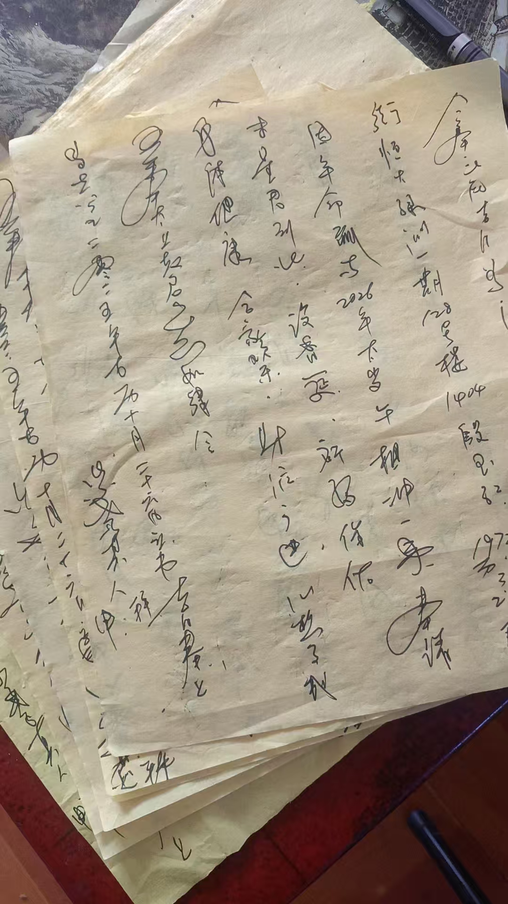
化解太岁中文书
八字化解
加民俗化解
下一步，买点厚黄裱纸，把化太岁文书打印出来，
这样写，累的手抖
今年三个档次，一百，二百，三百
二百就单独做不了
要有供品，酒，请太岁跟和神，一桌，就是一般酒，也得几百了
钱粮，每人一个一个就是几十块
大庙里是二百，就一个自己做的大锦盒，填上名字
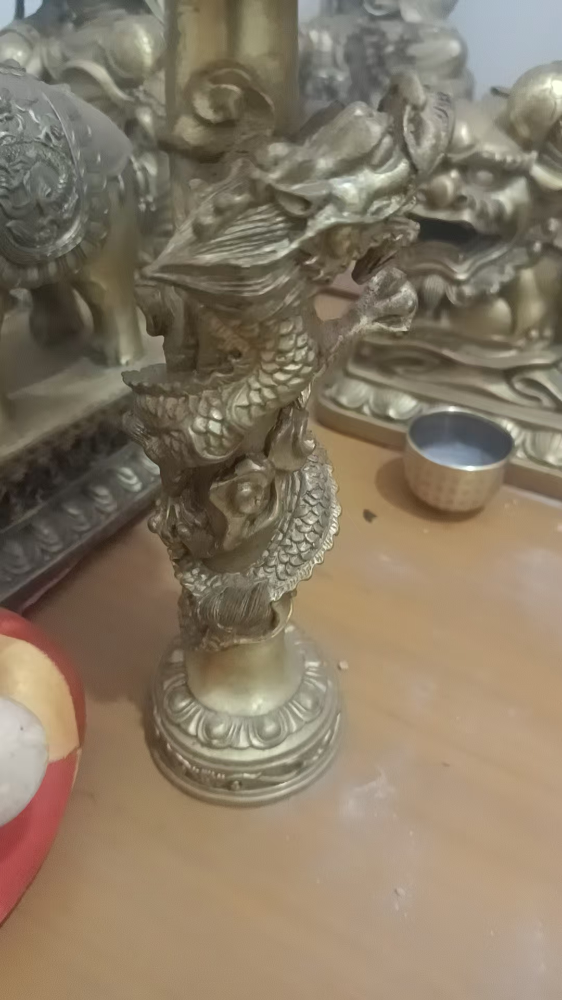
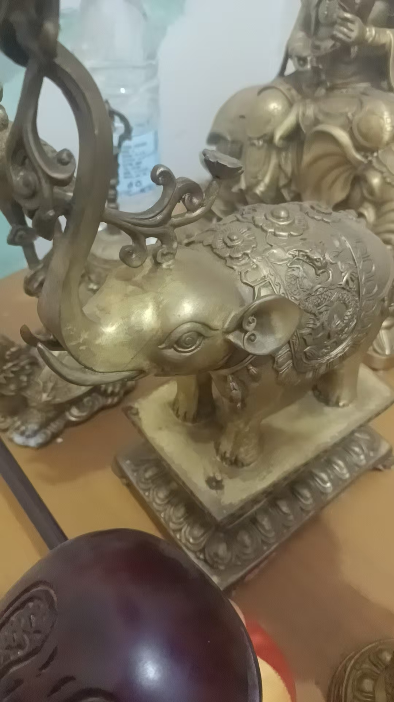
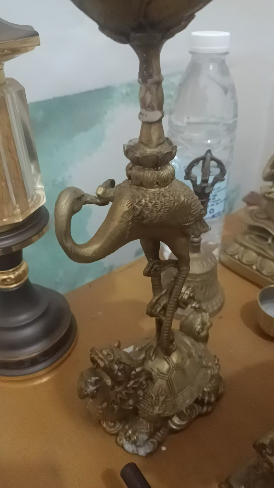
盘龙，大象，龟鹤
这三对灯
分别代表，文章，财，寿
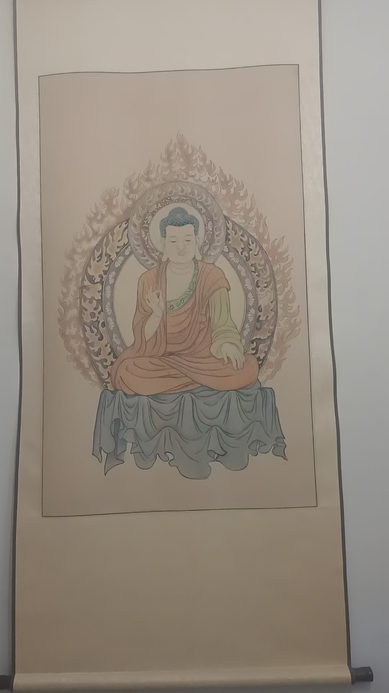
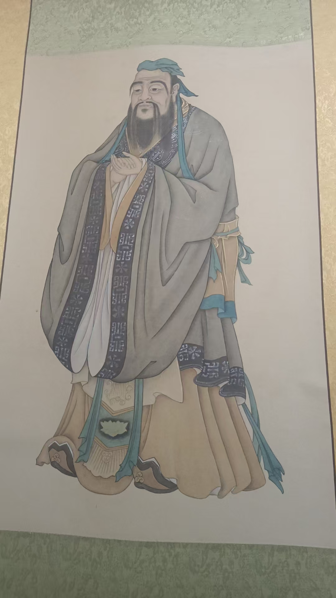
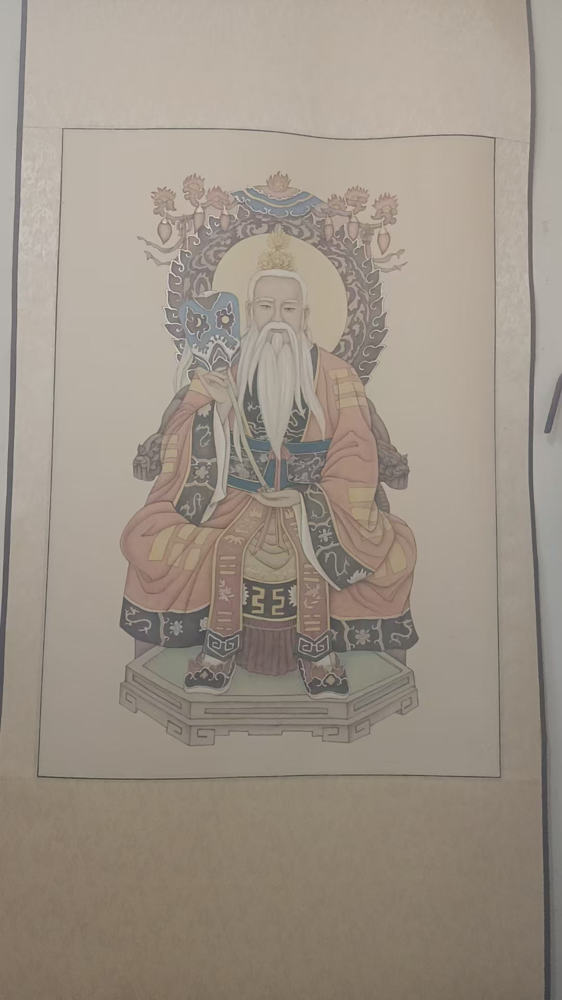
科委那时候讲究广才儒释道
也就是兼修儒释道
又不单独属于儒释道
所以，我说是出自科委
源自民间
老师，都哪些属相必须化太岁
每年不一样
明年丙午，马年
子午冲，属鼠的冲太岁
丑午相害，属牛的
卯午相破，属兔的
午午自刑，马坐太岁
2026年就是这四个
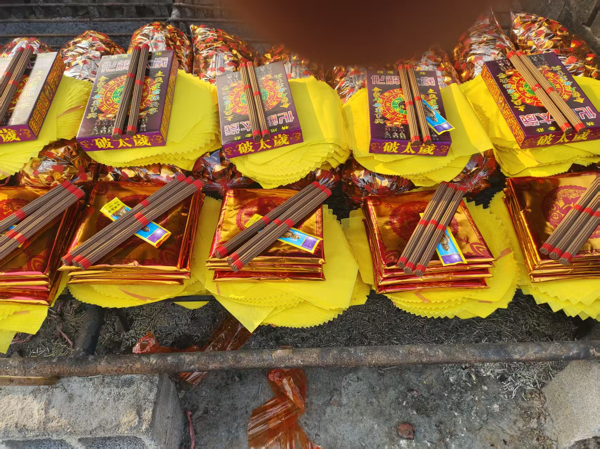
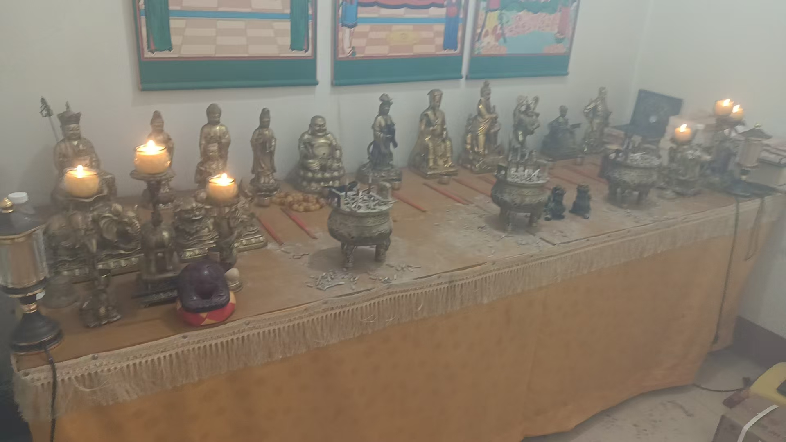
加供灯
一会去买水果，中午供奉
神也信，佛也信，就是民俗
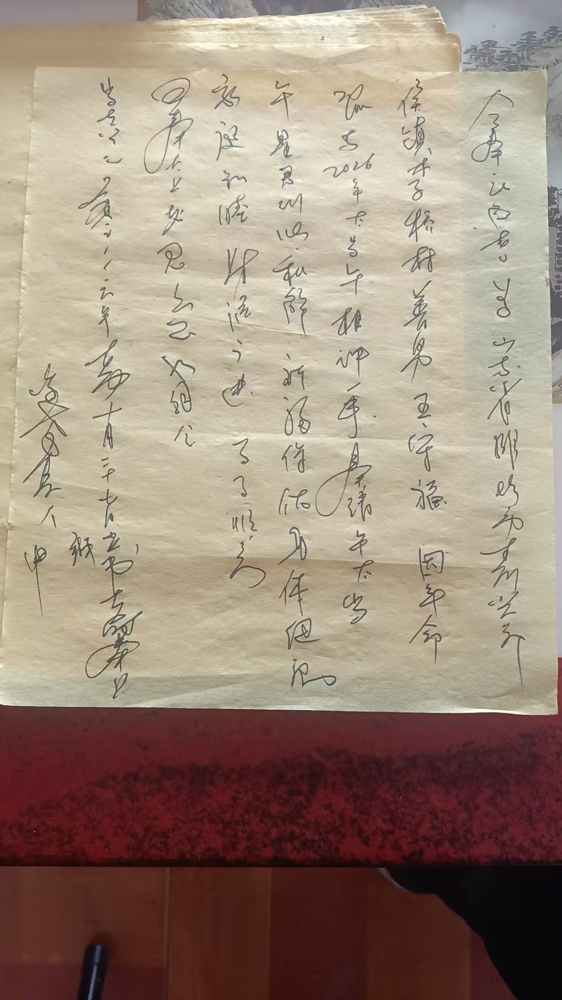
有空再说文书的写法
主要是咱们化解太岁，把念力加进去了，真起到调和一年气场作用
这是主要的
到26年之前都可以化解吧？
尽量早化解
是因为有的大运不好的，再犯太岁
就会出现干透三月
就是2026年的太岁负场，会提前三个月到来
在古历，十一月子月，就已经是明年了
八字化解太岁，就用未星君，来合住午太岁
就不会有刑冲克害了
就是说，还有化太岁，一家一般不只有一个，拿不出上千块银子的
就在自己菩萨面前，没有菩萨像的，就在厨房灶台上，灶王神君面前，没有灶王像也可以
买三样水果，三支香，三杯酒，三杯水
初一或者十五
供一供
念，请2026午太岁，跟未星君来和解（住址名字生日）因犯太岁一事，设香筵，祈福保佑，身体健康，阖家幸福，财源广进，诸事遂心，吾奉太上老君急急如律令
批发商烧元宝，方便多了
以前，买完供品，摆香案，再去拉回元宝来烧，写文书，一天累够呛
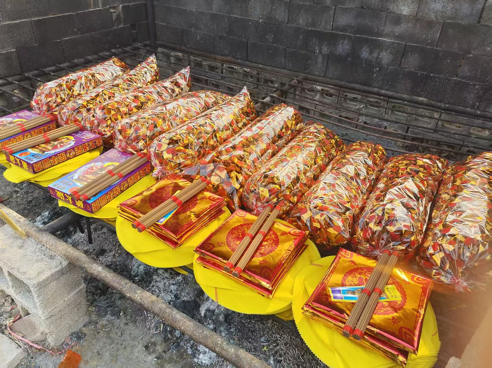
2026丙午年化解太岁：属相与民俗做法
一、本页讲了什么
本页是一段"化解太岁"的实录与说明，文字夹着多张图片。核心讲三件事：2026年（丙午马年）哪些属相犯太岁、化解太岁的民俗流程，以及为什么要尽早化解。记录者强调，他们这一套化解的特点是"把念力加进去"。
二、2026年哪些属相"犯太岁"
传统以值年太岁与各属相的生克关系来定。2026为丙午马年，按本页说法，涉及四个属相：
| 属相 | 与午年的关系 | 民俗说法 |
|---|---|---|
| 鼠 | 子午相冲 | 冲太岁 |
| 牛 | 丑午相害 | 害太岁 |
| 兔 | 卯午相破 | 破太岁 |
| 马 | 午午自刑 | 坐太岁／自刑 |
这属命理民俗的推法，每年不同，2026年即这四个。
三、化解太岁的民俗流程
据本页，做一场化解大致包含：化太岁文书（用厚黄裱纸打印或手写）、八字化解与民俗化解两部分；准备供品与酒，请太岁与"和神"共一桌；再备钱粮（每人一份）。文中提到民间有不同档次的方案，也有大庙代办的做法（填上名字、装锦盒）。
四、供灯与供品
文中另提到三对灯——盘龙、大象、龟鹤，分别代表"文章、财、寿"。供奉时还会加灯、上水果，多选在初一、十五。对条件有限的，本页给了一个简化做法：在自家菩萨像前（无像则在厨房灶王神君前），备三样水果、三支香、三杯酒、三杯水，供一供，并念一段祈福词（大意是请午太岁与未星君和解、保佑平安顺遂）。
五、为什么要"尽早化解"
本页给出的理由有二：一是"有的大运本就不好的，再犯太岁"更需早处理；二是民俗认为，2026的太岁"场"可能提前约三个月到来——在古历中，十一月子月已可视作进入来年。文中还提到一种做法：用"未星君"来合住午太岁，以求减少刑冲克害。
六、常见问题
问：化解太岁是必须做的吗？ 属民俗信仰与实践，信与不信因人而异。本站按传统文化整理，不承诺改运、消灾等现实功效。
问：一定要花很多钱吗？ 本页也提供了在自家简单供奉的替代说法。是否参与属个人选择，请量力而行，警惕借"化解"名义的高价收费。
问：属相怎么查？ 按传统干支纪年与生肖对应查即可；一年之内涉及的属相组合，各年不同。
七、提醒
- 本页属民俗记录，不构成任何建议；
- 涉及金钱往来请谨慎，勿轻信"不化解就出事"的说法；
- 传统信仰与民俗可作文化了解，请理性看待。